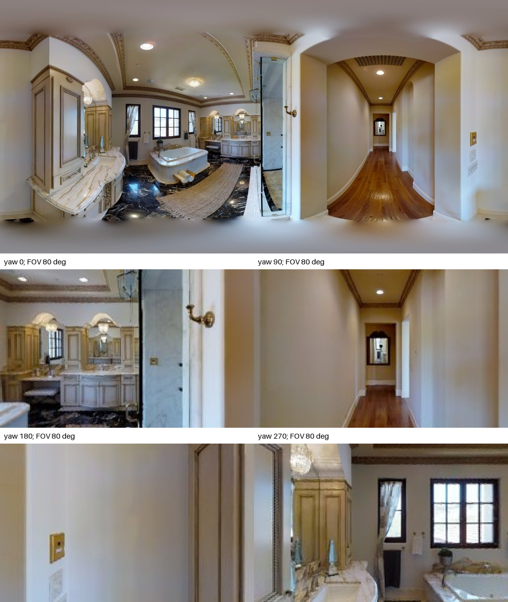
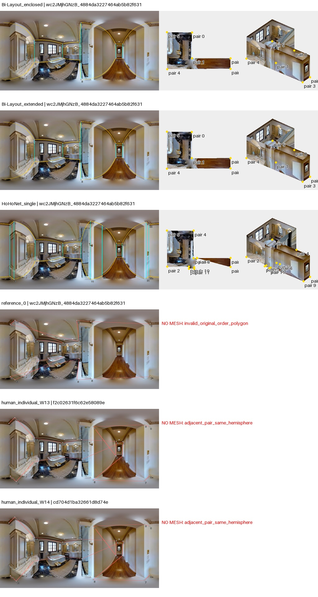
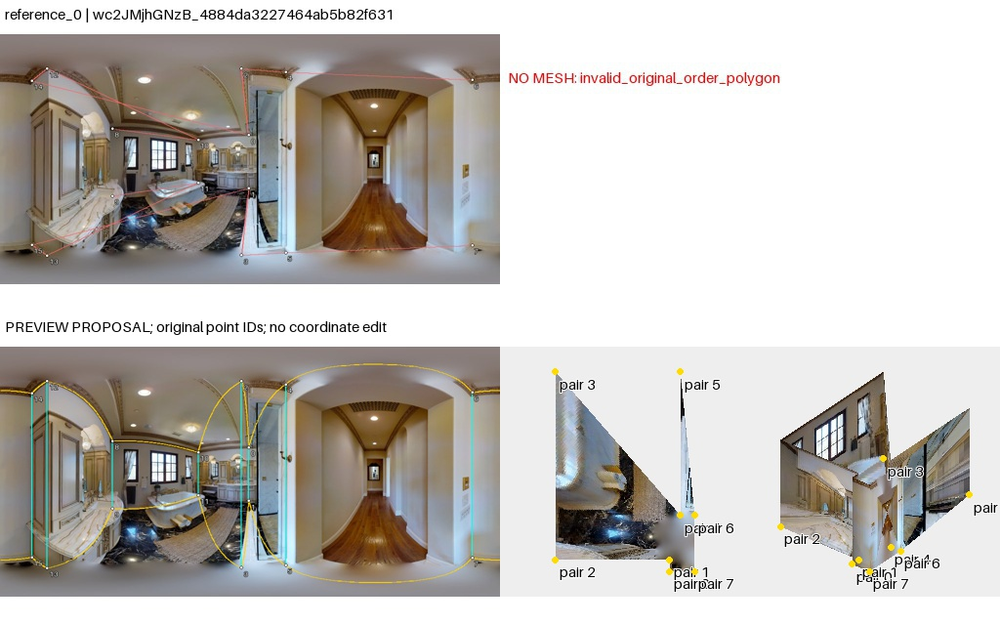

点序复查：旧失败图红线为脚本直连诊断，不是作者墙边证据。导出列表不等于已核实的邻接；重排仅是假设。50图核查与勘误
wc2JMjhGNzB_4884da3227464ab5b82f631ff22205bd
AI建议；人工最终判断为空。先看原图，再展开布局。图中3D采用单位相机高度、单全景回投影；不是扫描真值。
原始PNG · 2048×1024；点击图片查看原尺寸。下面的旧拼图仅作概览。

大浴室连拱形入口长走道，镜面与玻璃淋浴间反射多，台盆和浴缸遮地脚；走道远端可见镜像，需避免延伸进镜子。
左窗原始几何，右窗为工具的约束拟合诊断；拟合结果不等于正确标注。无法读取的点组保留失败。高清显示升级未重新裁定旧观察。

两头均包含浴室外的长廊，HoHo与参考增加局部细节。reference_0 自交，两个人工原始相邻对处于同一半球，不能直接解释其三维形状。
待人工判断：先核对真人点序，再判断其是否包含长廊；两头名称本身不决定实际范围。
03_reference_0：reject_as_interpretive_preview；浴室与长走廊呈转折连通，镜面反射与浴缸遮挡增加点位识别困难。参考0旧重排仍有不合理尖细部分，维持不推荐；W13和W14首先是上下配对读取失败，不能用同一排序自动修复。Bi两头近似也不能解除范围和镜面疑点。

04_human_individual_W13：unresolved_no_proposal；原始失败叠图已阅读；无法仅用保守点序调整解决，未生成替代网格。
05_human_individual_W14：unresolved_no_proposal；原始失败叠图已阅读；无法仅用保守点序调整解决，未生成替代网格。